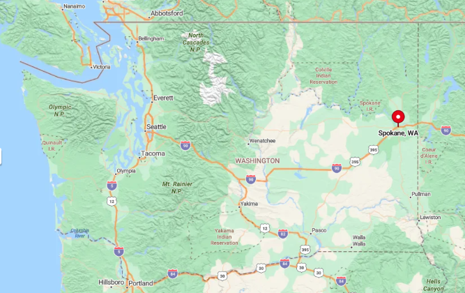
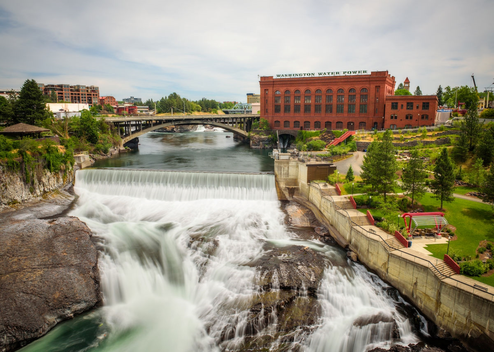
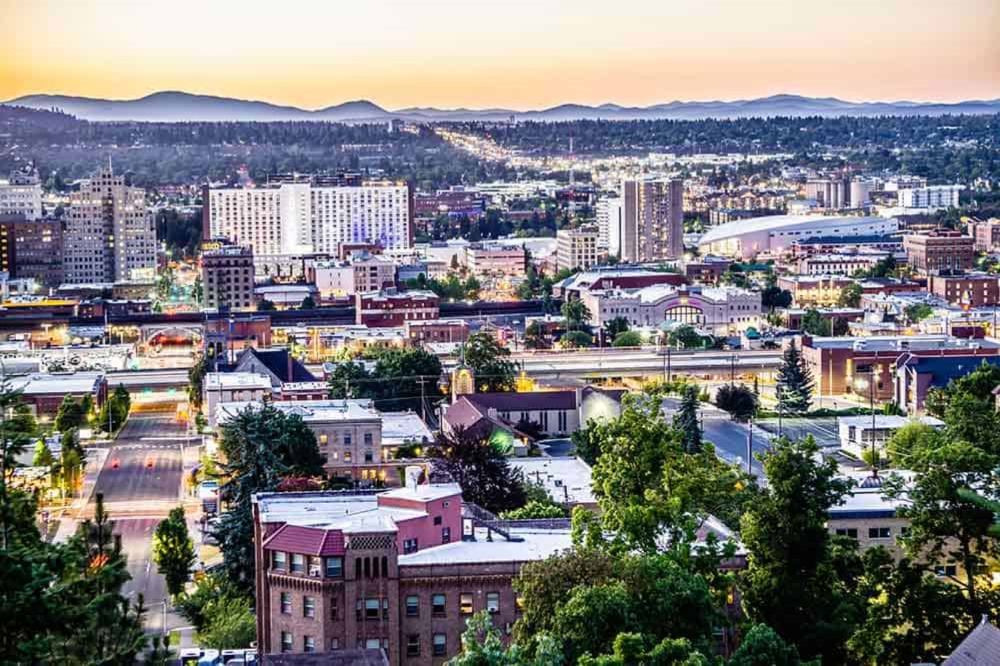

Spokane is located in Eastern Washington. Spokane is a very diverse city, it has many aspects of city life and plenty of nature. Spokane is known for its beauty and its culture.
Welcome to Spokane
Facts about Spokane
- Spokane is located in Eastern Washington
- The population is 228 thousand
- Spokane was established in 1871
- Spokane offers both Urban and Rural Living
- The average household income is $65,283, this is almost $16,000 under the state average of $81,245
Fun things to do in Spokane
- Visit Riverfront Park
- Visit Downtown
- Go to a Community Gathering
- Visit Local Shops and Breweries
- Go Hiking On One of the Many Hiking Trails and in Parks

Photographs of Spokane

Image Obtained From https://everydayspokane.com/spokane-public-schools-redraws-boundaries/

Image Obtained From https://www.valbridge.com/valbridge-office-spotlight-inland-pacific-northwest/
Sources
Information obtained from Office of Financial Management.
Information obtained from https://en.wikipedia.org/wiki/Spokane,_Washington.